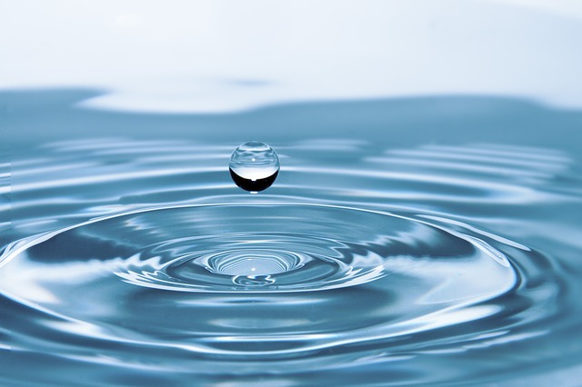

Water is 95% of beer!
Image by rony
michaud from Pixabay
Water-The quality of water used in brewing cannot be understated because water makes up
ninety-five percent of beer. Many brewers, such as the Coors Brewing, frequently advertise
the high quality of the Rocky Mountain water used for their beer. Without taking this
conversation too far down the rabbit hole into hydrology and chemistry, a basic principle
exists that if one’s tap water source is good enough to drink, it’s good enough to use for
brewing. The tap water in most areas of the Northwest is of high quality and has not been a
concern for my brews, however other regions have what is known as “hard water”. Hard water
usually means the water is high in the amount of calcium, magnesium ions and other minerals.
These minerals can negatively affect the beer. One can purchase a test kit to determine the
amount of minerals in their water and make adjustments via adding agents or other methods.